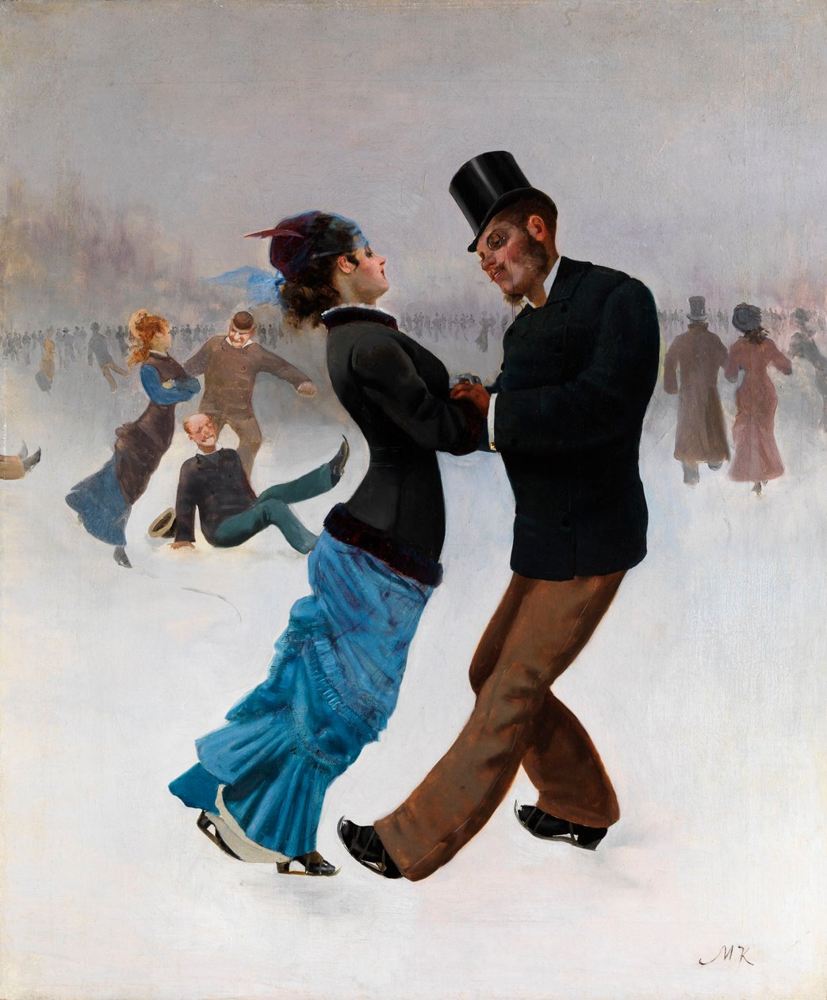
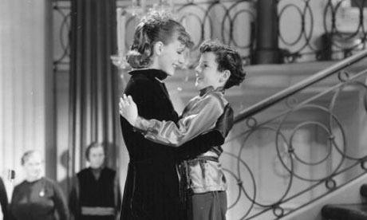

Asynchronous Calendars (Anna & Vronsky / Kitty & Levin)

Asynchronous calendars are a structural device in which time does not move at the same pace for all characters in the same novel. In the case of Anna Karenina, the use of this method is apparent in the asynchrony between the two main plotlines, that of Anna/Vronsky and Kitty/Levin. This asynchrony was first observed in Mikhail Dolbilov’s book Zhizn’ tvorimogo romana: Ot avanteksta k kontekstu 'Anny Kareninoi' (The Life of a Novel in the Process of Creation: From the Avant-text to the Context of Anna Karenina).
The most striking instance of asynchronous calendars in Anna Karenina occurs when Anna and Vronsky go abroad. They depart at the end of Part Four. In the following section of the book, Part Five, we see the wedding between Kitty and Levin take place before Lent, probably in February. Then we encounter Vronsky and Anna abroad and learn that they have been traveling for three months. They remain in Italy for what seems like a few more weeks, but then decide to return home to Russia before the summer. Therefore, it seems that they could not have been away for very long, certainly no more than six months. However, we then learn that they returned at the end of the following winter. This long span of time, however, is not experienced by the other characters, such as Kitty and Levin: Anna and Vronsky spend more time abroad than Kitty and Levin do in Russia. This effect of different speeds of time is striking when Anna returns to Petersburg. When she comes to her own home after being away, Tolstoy writes: “Anna had certainly not expected that the utterly unchanged decor of the hall in the house where she had lived for nine years would affect her so strongly” (Tolstoy 534). After only six months of absence, Anna’s emotional response to the “utterly unchanged decor” seems somewhat out of place. Furthermore, when Anna sees her son Seryozha, it seems as though many years have passed since their last encounter. “She had imagined him as he was when she had loved him the most, as a four-year-old boy. Now he was not even the same as he was when she had left him; he had left his four-year-old self even further behind, he had grown taller and lost weight” (Tolstoy 536). His physical changes are repeatedly emphasized: “She recognized and did not recognize his bare legs sticking out from under the blanket, which were now so long” (Tolstoy 537). Of course, several months can make a big difference in a young child's appearance. However, Anna’s shock seems disproportionate to the amount of time that seems to have passed in Russia. She acts as though she had not seen her son in many years, emphasizing the disconnect between the amount of time she has experienced and that of the other characters. The asynchronous calendars emphasize the distance of Anna and Vronsky’s world from that of the rest of the novel. When abroad, they are totally cut off from the rest of society, operating only within the world of their affairs, which proceeds at a breakneck (and dangerous) pace, while the rest of the world continues on a different timeline. The swiftness with which Anna leaves and returns, and the swiftness with which she moves from place to place and interest to interest abroad, makes the reader aware of the impulsive and thoughtless character of her affair. Furthermore, her returning to a grown son might suggest that her absence was decisive in her relationship with her child. She has missed a formative developmental period that she can never get back. The device of asynchronous calendars also hints at the constructed, artistic nature of Tolstoy’s work. While Anna Karenina is often praised for its realism, Tolstoy’s deliberate use of telescoped, unnatural time shows that he is not interested in merely reflecting life onto the page, but in crafting an elaborate world of meaning.
Works Cited
- Dolbiolov, Mikhail. Zhizn' tvorimogo romana: Ot avanteksta k kontekstu 'Anny Kareninoi'. Moscow: Novoe literaturnoe obozrenie, 2023.